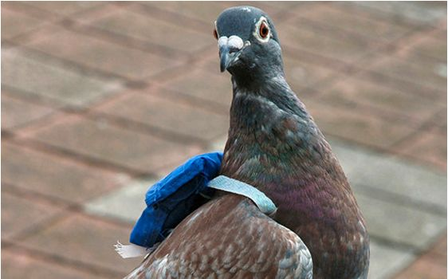

Interneto protokolas per skrendančius nešėjus
Kompiuterių tinkluose, IPoAC yra siūlomas interneto protokolas skirtas transportuoti IP paketus paukščių, kaip naminių balandžių, pagalba. IPoAC buvo iš pradžių apibrėžtas RFC 1149 Deivido Waltzmano iš IETF. Vėliau protokolas buvo patobulintas RFC 2549 ir 2011 m. integruotas su IPv6 RFC 6214.